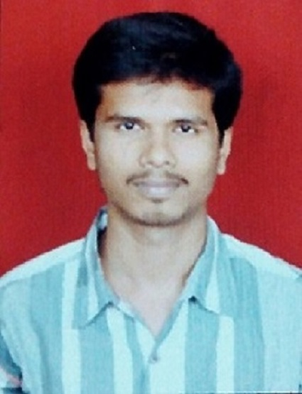

|  |
Ajinkya Mohan SawantBldg 1A/503, Oshiwara Orchids CHS, Patliputra Nagar, Jogeshwari West,Mumbai 400102 🏡 Professional Summary A Software Quality Engineer with 2.5 yr experience with leading MNCs in life science, communications and e-Learning domains on
desktop, mobile platforms. |
| Year of passing | Degree | Institute | University | Marks Secured |
|---|---|---|---|---|
| May 2014 | Bachelor of Engineering in Electronics and Telecommunications | Sardar Patel Institute of Technology | Mumbai University | 66.19% |
| Feb 2010 | H.S.C | S.I.E.S College | Maharashtra State Board | 80.16% |
| Mar 2008 | S.S.C | IES New English School | Maharashtra State Board | 90.76% |
| Testing: Functional and Non-functional Manual testing, Agile,
Waterfall, STLC management General: Critical Analytical Skills, Communications, Leadership, Project co-ordination, Corporate training, Content Development, Lectureship |
Languages: Java, C++, SQL Tools: Redmine, JIRA, MS-Office, HP-QC, Browser Stack, SOAP UI, IntelliJ, PyCharm, Google Chrome Developer tools. Frameworks: Robot Framework – Selenium Library for Web automation |
Designation: Software Quality Engineer Duration: March 2020 - Present
Roles and Responsibilities
Designation: Application Tester Duration: August 2019 – February 2020
Roles and Responsibilities
Awards and Recognition: 'Letter of Excellence' from the CEO and Team Leaders for performance and innovations in projects.
Designation: Freelance Faculty Duration:November 2015 - August 2019
Roles and Responsibilities
Designation: Programmer Analyst TraineeDuration: September 2014 - July 2015
Project 1: MyPharamaNet - Novartis (Life Sciences)
Awards and Recognition: ‘ Pillar of the Month - Delivery’ for month of April 2015.
Project 2: MiNova,Mintake - Novartis (Life Sciences)
I hereby declare that the information mentioned above is true to the best of my knowledge and belief.